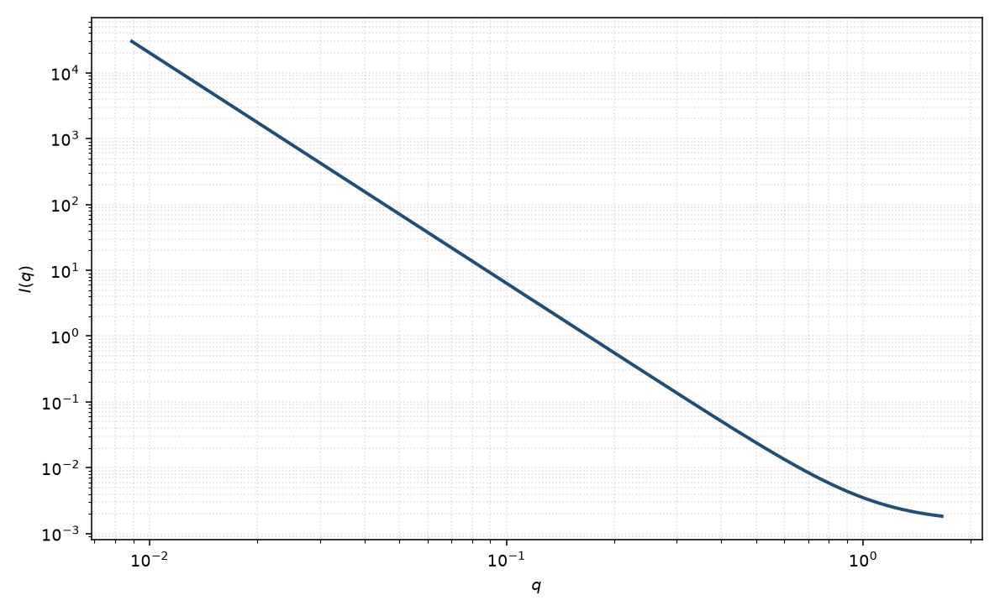

表面分形
surface fractal
适用场景
界面在一定尺度上粗糙、面积随码尺变化时，Bale–Schmidt 给出 $I\sim q^{D_s-6}$。光滑面 $D_s=2$ 回到 Porod $q^{-4}$；极粗糙面 $D_s\to 3$ 接近 $q^{-3}$。
中间指数若小于 $3$，更像质量分形而不是表面。只想谈面积时用 Porod。
物理图像
表面分形把“面积”变成随观测尺度变化的量。Fourier 变换把 $D_s$ 送进 Porod 指数：$6-D_s$。建造块内部若均匀，高 $q$ 仍可能再变陡。
磁性粗糙界面（死层、畴壁褶皱）可以有与核不同的 $D_s$。
示意图

核心公式
出发点
表面分形把“面积”变成随码尺变化的量：在尺度 $r$ 上 $S(r)\sim r^{\,2-D_s}$。锐利但粗糙的界面使 Debye 相关在小 $r$ 的缺口不再是线性（Porod 的 $D_s=2$），而是 $r^{3-D_s}$。Bale–Schmidt 由此得到推广的 Porod 指数。
推导
光滑面：$\gamma(r)=1-\mathrm{const}\cdot r+\cdots$，Fourier 给出 $q^{-4}=q^{2-6}$。一般表面维数把线性换成
$$\gamma(r)=1-C\,r^{3-D_s}+\cdots,\qquad 2\le D_s\le 3.$$$\mathrm{FT}[r^{\,3-D_s}]\propto q^{-(6-D_s)}$，故
$$I(q)\simeq A\,q^{D_s-6}+B.$$$D_s=2$ 回到 Porod $q^{-4}$；$D_s\to 3$ 接近 $q^{-3}$。$A$ 含衬度与粗糙界面的广义面积，没有绝对标定时不能读成真面积。
低 $q$ 与渐近
本式描述界面区（高 $q$ 相对整体尺寸）。低 $q$ 仍由颗粒/孔径的 Guinier 或质量分形控制，本页不含那段。中间指数若已小于 $3$，更像质量分形 $q^{-D_m}$，不要把 $D_m$ 改写成越界的 $D_s$。
参数表
| 参数 | 符号 | 含义 | 单位 | 典型范围 |
|---|---|---|---|---|
| 表面维数 | $D_s$ | 表面分形维数 | 无量纲 | $2$–$3$ |
| 幅度 | $A$ | 广义 Porod 前置 | 与强度单位一致 | 需绝对标定才谈面积 |
| 标度 / 本底 | $\mathrm{scale}$, $B$ | 前置因子与常数本底 | 与强度单位一致 | 实验相关 |
拟合注意
取向：高度取向的粗糙膜应使用二维表面分形，指数不同。粉末 $D_s$ 是平均。
多分散孔径改变到达表面区的 $q$，但不把 $D_s$ 改成质量维数。磁性 Porod 用磁衬度。
可辨识性：把质量分形的 $D_m\approx 2.5$ 误读成 $D_s=3.5$ 会超出 $[2,3]$。先根据样品是“团簇”还是“界面”选择模型。
相近模型
参考文献
- Bale, H. D.; Schmidt, P. W. Small-angle X-ray-scattering investigation of submicroscopic porosity with fractal properties. Phys. Rev. Lett. 1984, 53, 596–599. DOI: 10.1103/PhysRevLett.53.596
- Teixeira, J. J. Appl. Cryst. 1988, 21, 781–785. DOI: 10.1107/S0021889888001990